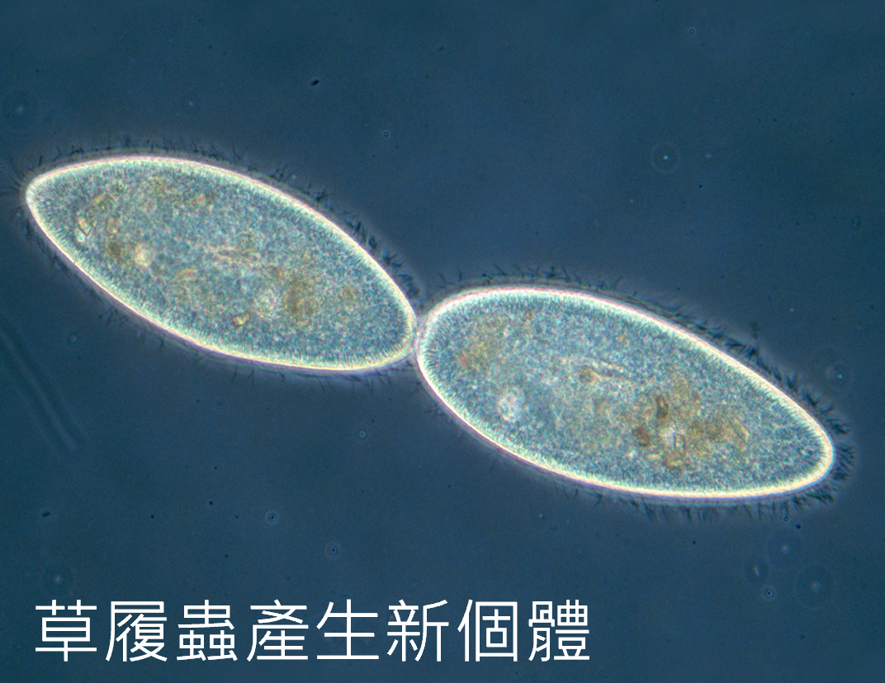
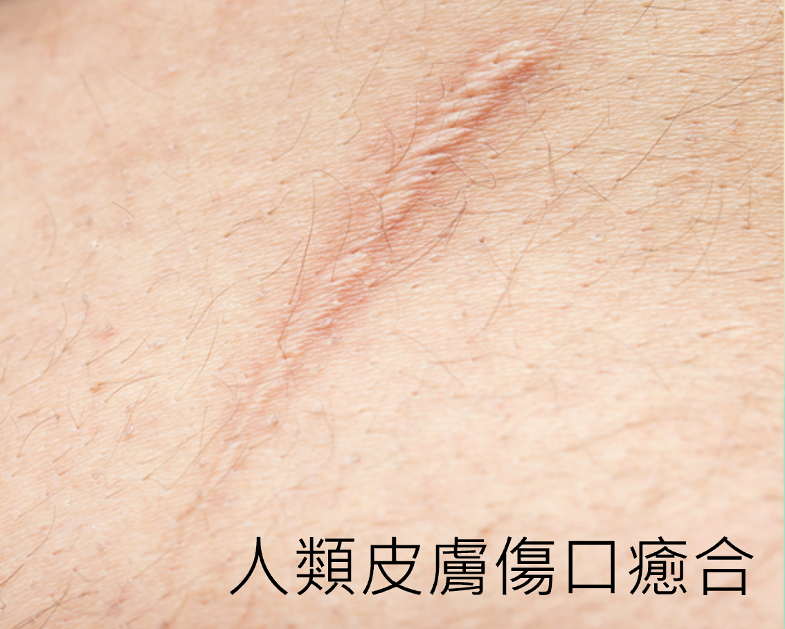

細胞分裂 就像「細胞的複製＋分家」：一個細胞分成兩個。 它對生物很重要，因為可以讓生命延續、身體維持正常運作。
單細胞生物 會透過 細胞分裂 直接產生 新個體（例如 變形蟲、草履蟲）。
多細胞生物 透過 細胞分裂 產生 新細胞，讓身體能 生長、更新 衰老細胞、 以及 修補 受傷組織（像是 皮膚磨損脫落、傷口癒合）。


用兩句話記住差別：
例如人類：皮膚細胞因為磨損會脫落，或是受傷時需要修補， 都要靠 細胞分裂 產生 新細胞 才能完成。
細胞分裂前，染色體 會先 複製一次； 接著細胞 分裂一次，形成兩個 子細胞。 重點是：子細胞染色體數目 會和 母細胞 相同。
例如人類細胞有 46條（23對） 染色體， 分裂後兩個子細胞仍各有 46條（23對）。
細胞在沒有分裂時，細胞核內的遺傳物質常呈 絲狀，因此通常看不到「未複製的染色體」。
細胞分裂：染色體 複製 __ 次， 細胞會 分裂 __ 次。
把前面學到的概念用在情境題上。